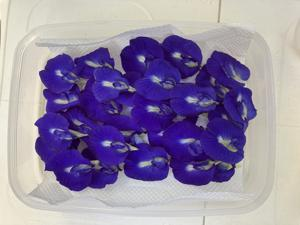
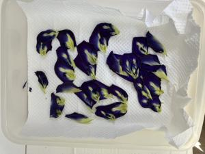

うるがいの話 ある日
最新: バタフラピーを乾燥【うるがいの話 ある日】とは 一日だけのプログです
『うるがいの話』の最新一日だけのプログで、通信料が少なく経済的だ。カニの画像をクリックすると全ての日付が載る『うるがいの話』サイトを表示します
|
|
【うるがいの話】 うるがい(ｳﾙｶﾞｲ urugai)とは、『もずくがに』の名前でとても大きくなります。 |
|---|---|
|
|
【カミマヤーの話】 猫のことを方言でマヤーといいます。カミマヤー（kamimayaa）とは、神の猫のことです。 |
|
【たながぁの音楽】 たながぁ（ﾀﾅｶﾞｰ tanagaa）とは手長えびのことで、何種類かあり大きいのは車 エビぐらいになります。 |

|
【ぶながぁの話】 ぶながぁ(ﾌﾞﾅｶﾞｰ bunagaa)とは、赤い髪の毛、赤い身体、そして身長は１ｍ２０ｃｍ ぐらい、川の蟹を食べているの目撃された。場所は沖縄県国頭郡大宜味村のと ある村僕の隣近所に住んでいる爺さんから、聞いた話です。 |
|
|
【ギーマの話】 ギーマ(giima)とは、山原の里山に咲くスズランに似た、 花を付けます。実は食べられます、 気が付くと口の周りが紫になっています。 |
2024年10月09日 (水）バタフラピーを乾燥
18:10
バタフラピーの花を冷蔵庫に入れたら、一杯になったので叱られる。仕
方ない天日干しするべ、と未経験だけど挑戦した。乾燥させると凄くス
ゴク小さくなる。花を咲かせる時期はもう少しだけだ。しっかり蓄える
とする。
今日の花

昨日の花、小さくなっている。

【左足首のところに捻挫のような紫 全然痛くない】と写真を撮り画像
検索すると、捻挫だけだった。確かに見た目には、そうなんだが。
ぶつけてもいないのに、赤紫や青紫色のあざのようなものができている
ことはありませんか。血管から流れ出た血が皮膚の中にたまり皮膚が紫
色や青黒いあざになる状態を皮下出血(紫斑)といいます。
フムフム、確かに。【バタフライピーの花には抗血栓・血症溶解作用の
ある成分が含まれています。】の影響かも。
あ！、最近ラインの友達が増えたのですよ（１６名だった）。
【１０／２１までに見て】ＬＩＮＥ ＶＯＯＭのフォローリスト更新！
勝手に友達が追加されます。
対応しました。
１８時０５分 ビットコインの総資産 ￥２６、８０８（↑３９）